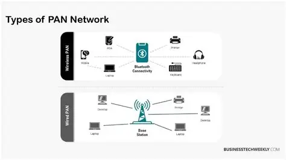
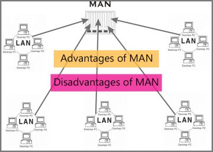
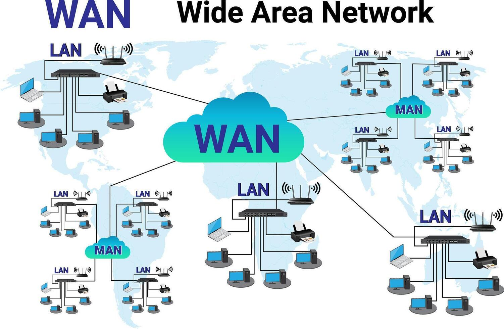
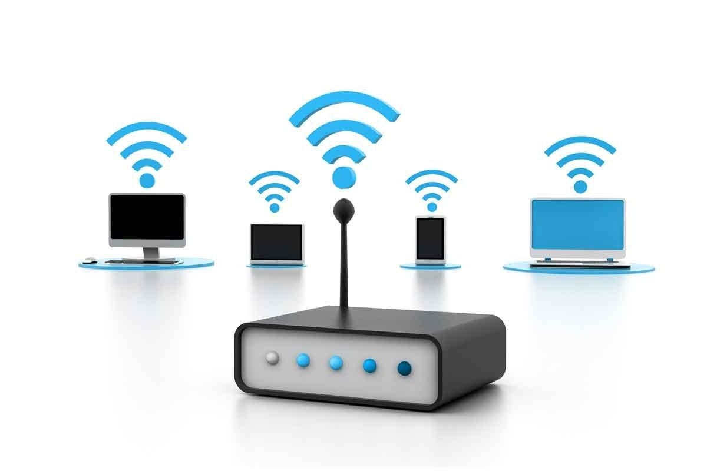

Local Area Network (LAN)
LANs are networks that connect computers within a limited area, such as a home, office, or school. They are ideal for sharing resources like printers and files.

Computer networks come in various types, each serving different purposes and scales.
PANs are small networks designed for personal use, typically connecting devices like smartphones, laptops, and tablets within a short range.
LANs are networks that connect computers within a limited area, such as a home, office, or school. They are ideal for sharing resources like printers and files.
MANs cover larger areas than LANs, such as a city or campus. They are used to connect multiple LANs within a region.
WANs are large networks that span across cities, countries, or even continents. The internet is the largest example of a WAN.
Wireless networks use radio waves to connect devices without physical cables, enabling mobility and flexibility.
